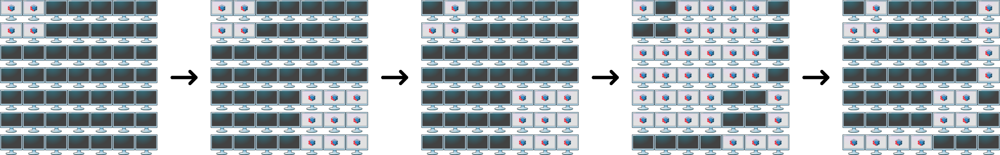

Pada bulan Juni, Pak Dengklek dan keluarganya berlibur ke kota Bogor. Di salah satu hari liburannya, mereka mengunjungi mal Binary Square dan menemukan sebuah atraksi televisi yang menarik perhatiannya.
Atraksinya ditampilkan pada sekumpulan televisi yang tersusun membentuk persegi berukuran $N \times N$ dengan $N$ baris (dinomori dari $1$ sampai $N$) dan $N$ kolom (dinomori dari $1$ sampai $N$). Televisi yang terletak pada baris ke-$r$ dan kolom ke-$c$ dinotasikan sebagai televisi $(r, c)$. Masing-masing televisi hanya bisa dalam keadaan menyala atau padam. Awalnya, setiap televisi dalam keadaan padam.
Terdapat $P$ perubahan yang akan terjadi. Perubahan ke-$i$ berupa dua bilangan bulat $T_i$ dan $W_i$.
Apabila televisi yang menyala berubah status, maka televisi itu menjadi padam. Sebaliknya, apabila televisi yang padam berubah status, maka televisi itu menjadi menyala.
Setelah semua $P$ perubahan terjadi, Pak Dengklek mempunyai $Q$ pertanyaan. Pertanyaan ke-$j$ menanyakan apakah televisi $(X_j, Y_j)$ dalam keadaan menyala atau padam. Bantulah Pak Dengklek menjawab semua pertanyaannya!
Masukan diberikan dalam format berikut:
N P T1 W1 T2 W2 ⋮ TP WP Q X1 Y1 X2 Y2 ⋮ XQ YQ
Untuk masing-masing pertanyaan, keluarkan sebuah baris berisi 0 apabila televisi yang ditanyakan dalam keadaan padam, atau 1 apabila televisi yang ditanyakan dalam keadaan menyala.
7 5 1 2 2 5 1 1 1 6 2 1 4 1 1 6 5 2 7 4 3
0 1 1 0
Berikut adalah ilustrasi untuk urutan perubahan yang terjadi.

Berikut adalah posisi televisi-televisi yang ditanyakan.